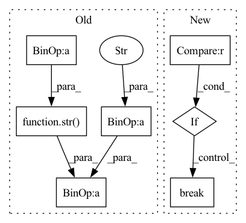

Pattern ID :23314
Before Change
video_name = str(path_as_list[-1])
cap.release()
file_description = ("\n"
+ " Path: " +
video_path.replace(video_name, "") + "\n\n"
+ " File: " + video_name + "\n\n"
+ " Resolution: " +
str(width) + "x" + str(height) + "\n\n"
+ " Size: " +
str( truncate(file_size / 1048576, 2)) + " MB" + "\n\n"
+ " Duration: " + str(minutes) +
":" + str(round(seconds)) + "\n\n"
+ " Frames: " + str(num_frames) + "\n\n"After Change
// 2) get first frame of the video
while(cap.isOpened()):
ret, frame = cap.read()
if ret == False :
break
cv2.imwrite(fist_frame, frame)
break
cap.release()
In pattern: SUPERPATTERN
Frequency: 3
Non-data size: 7
Instances Fragment ID: 73474753
Project Name: djdefrag/qualityscaler
Commit Name: 66b6f13eca96c3a97a48871850754b01b7403ab2
Time: 2022-06-02
Author: jjluca96@gmail.com
File Name: QualityScaler.py
M Class Name: AnonimousClass
N Class Name: AnonimousClass
M Method Name: show_video_info_with_drag_drop(1)
N Method Name: show_video_info_with_drag_drop(1)
M Parent Class:
N Parent Class:
M File Name: QualityScaler.py
N File Name: QualityScaler.py
M Start Line: 1081
M End Line: 1126
N Start Line: 1128
N End Line: 1198
Before Change
sm=softmax(out[i])
pts.append((sm[1].item(), j[-1][i].item()))
valloss=totalloss/totals
acc = float(correct)/ totals
print("Epoch "+str(epoch)+" valid loss: "+str(valloss)+" acc: " + str( acc) )
if auprc:
print("AUPRC: "+str(AUPRC(pts)))
if acc>bestvalacc:After Change
torch.save(model,save)
else:
patience += 1
if early_stop and patience > 20 :
break
scheduler.step()
Fragment ID: 73474731
Project Name: pliang279/multibench
Commit Name: 62bf78b72dde077b9febf7fe1cc3e50c936fbcbb
Time: 2021-04-26
Author: ztwu_nil@zju.edu.cn
File Name: training_structures/Contrastive_Learning.py
M Class Name: AnonimousClass
N Class Name: AnonimousClass
M Method Name: train(14)
N Method Name: train(14)
M Parent Class:
N Parent Class:
M File Name: training_structures/Contrastive_Learning.py
N File Name: training_structures/Contrastive_Learning.py
M Start Line: 99
M End Line: 161
N Start Line: 99
N End Line: 157
Before Change
sm=softmax(out[i])
pts.append((sm[1].item(), j[-1][i].item()))
valloss=totalloss/totals
acc = float(correct)/ totals
print("Epoch "+str(epoch)+" valid loss: "+str(valloss)+" acc: " + str( acc) )
if auprc:
print("AUPRC: "+str(AUPRC(pts)))
if acc>bestvalacc:After Change
torch.save(model,save)
else:
patience += 1
if early_stop and patience > 20 :
break
scheduler.step()
Fragment ID: 73474764
Project Name: pliang279/multibench
Commit Name: 0566c062ada67f67199bb5b63046fab1fd680654
Time: 2021-04-26
Author: ztwu_nil@zju.edu.cn
File Name: training_structures/Contrastive_Learning.py
M Class Name: AnonimousClass
N Class Name: AnonimousClass
M Method Name: train(14)
N Method Name: train(14)
M Parent Class:
N Parent Class:
M File Name: training_structures/Contrastive_Learning.py
N File Name: training_structures/Contrastive_Learning.py
M Start Line: 99
M End Line: 161
N Start Line: 99
N End Line: 157